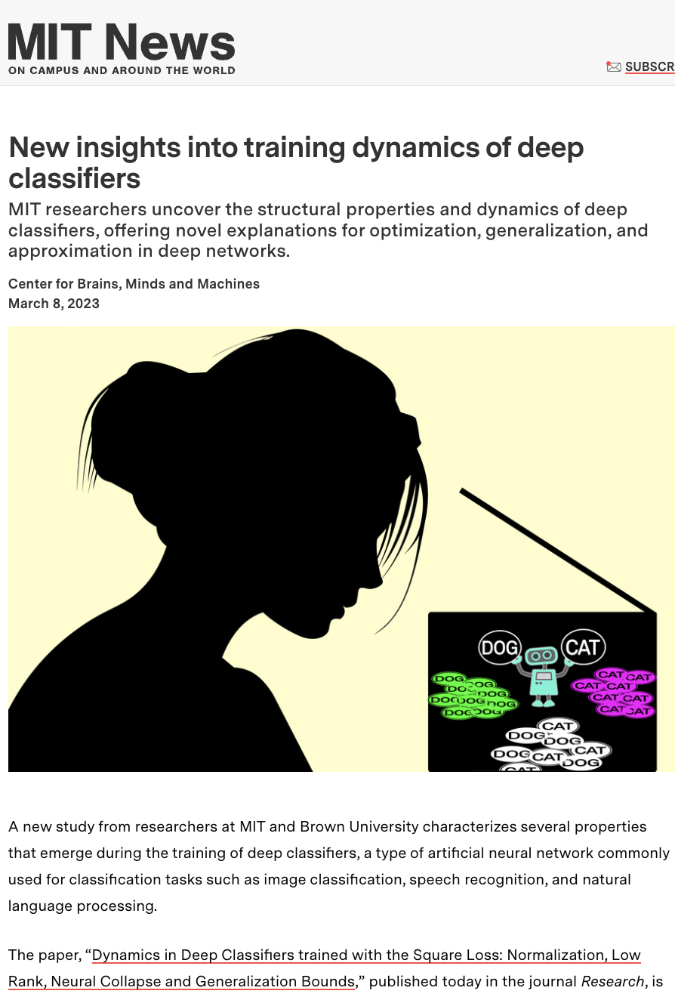
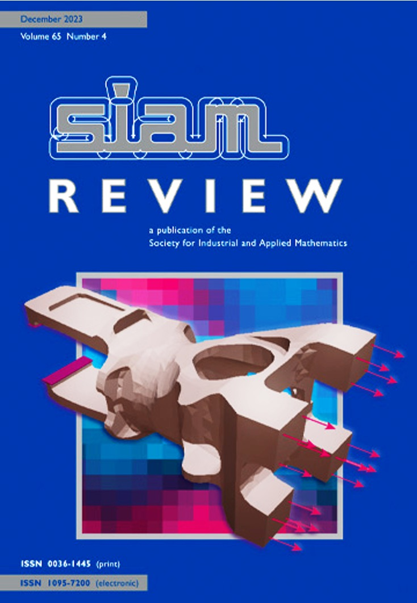
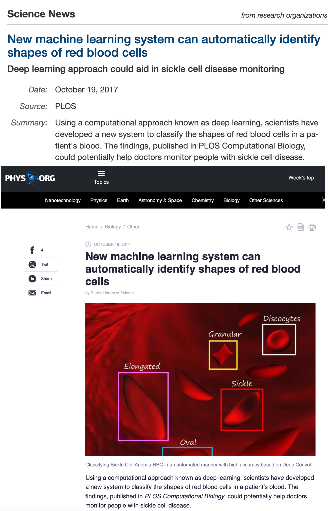

News
- 12/22/2023: "TransformerG2G: Adaptive Time-Stepping for Learning Temporal Graph Embeddings Using Transformers" was accepted by Neural Networks.
- 9/21/2023: "Norm-Based Generalization Bounds for Compositionally Sparse Neural Networks" appears in NeurIPS2023 (New Orleans, LA).
- 10/25/2023: A new preprint on "Hyperbolic graph embedding of MEG brain networks to study brain alterations in individuals with subjective cognitive decline" appears in bioXiv.
- 3/8/2023: "Dynamics in Deep Classifiers Trained with the Square Loss: Normalization, Low Rank, Neural Collapse, and Generalization Bounds" was published in the Science Partner Journal Research (MIT News)
- 5/20/2022: "DynG2G: An Efficient Stochastic Graph Embedding Method for Temporal Graphs" was accepted by IEEE TNNLS.
Media

New insights into training dynamics of deep classifiers (Download Paper)
Mar 08, 2023, MIT News

Invited Paper: Understanding Graph Embedding Methods and Their Applications (Download paper)
November 4, 2021

New machine learning system can automatically identify shapes of red blood cells (Download paper)
October 19, 2017, Science Daily News